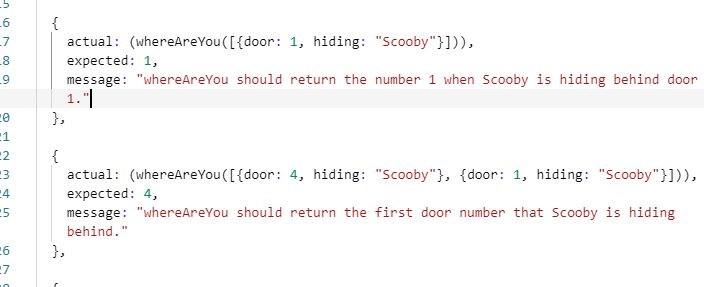
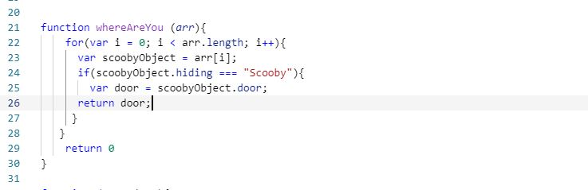

I got stuck on many problems this week, but I used some problem solving techniques and got throught the problems.
One of the problem I got stuck on is this one , below, from Built-in methods Kata Challenge. we were asked to
find the door number that Scooby is hiding behind. We may want to use console.log or the tests in the
functions.test.js file to help us solve this one.

In the start, I was trying to use If/Else function to get to the solution, but after long hours of research on the internet,
I found out I can use a 'for' Loop and keep looping till Scooby is found. So I did something thing like this,

When I ran this code, I passed all the later tests to come , maybe like 2 more, just like that!!! I felt really happy.
Using the For Loop helped to ignore writing one statements many times, to reduce many lines of codes and made the program less complex.
Problem solving techniques
Pseudocode
TBH, I only used Pseudocode in some challenges, as I am still new to it and most of the time I have got comments and solutions
on my mind. Its time i start using this technique more.
Trying something
I mostly solved or started towards a neat solution by trying something, something i've done before or a code that is on my mind.
This trick works a lot, mostly for those who actually want to solve a problem themselves. :)
Rubber ducky method
In software engineering, rubber duck debugging is a method of debugging code. The name is a reference to a story in the book
The Pragmatic Programmer in which a programmer would carry around a rubber duck and debug their
code by forcing themselves to explain it, line-by-line, to the duck.
I was stuck a lot of times, and just only by de-bugging I got to some solutions. I had some colons missing, or the capitalization, blah blah !
Googling
This method tops my list, Hehe! I think its easy and more informatic. By doing this, I learnt more than what I have been looking for,
by juming from sites to sites.
Asking coaches for help
This one is my Last Resort! Usually, I'll be stuck on a problem and I'll text my facilitator asking for help, five to ten minutes later
I'll probably find a solution. But I am pretty good at asking for help!